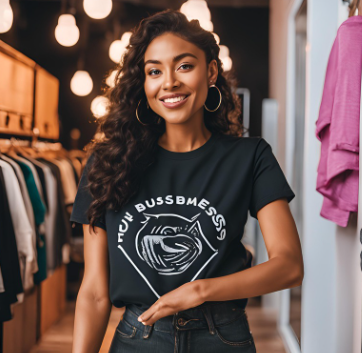
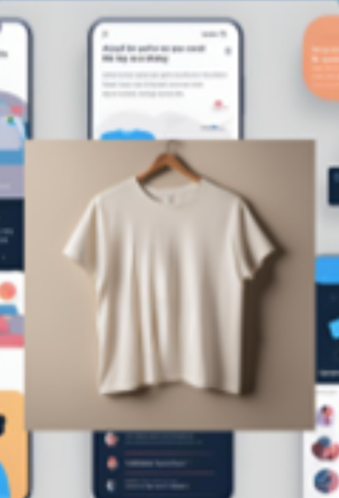
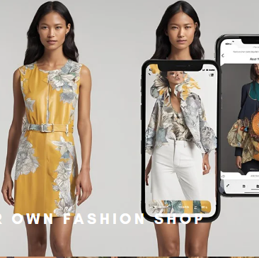
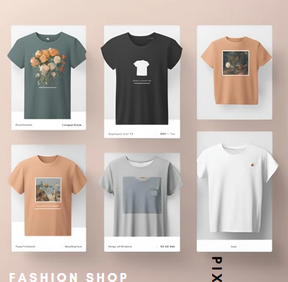
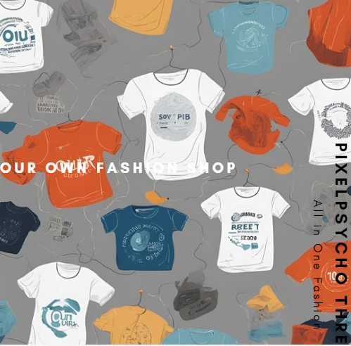

Step 1: Customize T-shirt
Users select a design or upload their own.

Step 2: AI Design Suggestions
AI suggests design tweaks based on sustainability and style.

Step 3: AR Try-On
Users visualize their designs in real-time through AR.

Step 4: Order Confirmation
Final order placed with eco-friendly production.

Step 5: Recycling/Upcycling Option
Return old T-shirts for recycling.